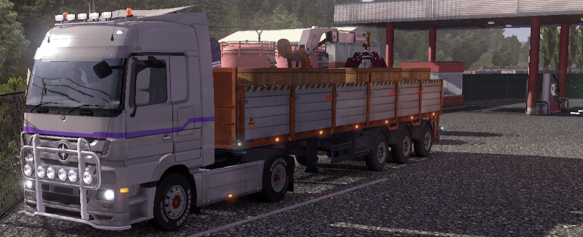

How to Apply
As noted before, we do not have an online application system, so we are limited to a Facebook page. You may also contact our CEO, GabrielAngelious on the Euro Truck Simulator 2 Multiplayer Forums here.
If you wish to make an application to become a member of the Company, please include your in-game name AND your ETS2MP forum name, should they be different, your age, preferred truck and why you think our company is right for you.
When our advanced website (obviously, not this one!) is complete we will notify everyone via the forums, and the online application system will be enabled for use. Please be patient while we bring you a much easier application process.
Please also note: applications that are poorly formed (ie. many grammatical/spelling errors) will not be considered due to the lack of perceived professionalism.
